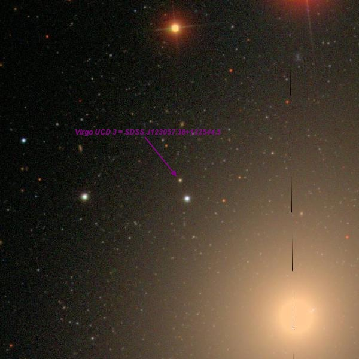
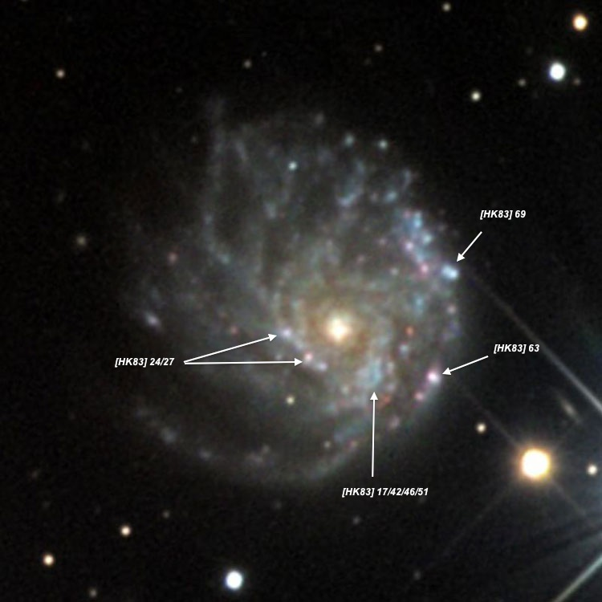
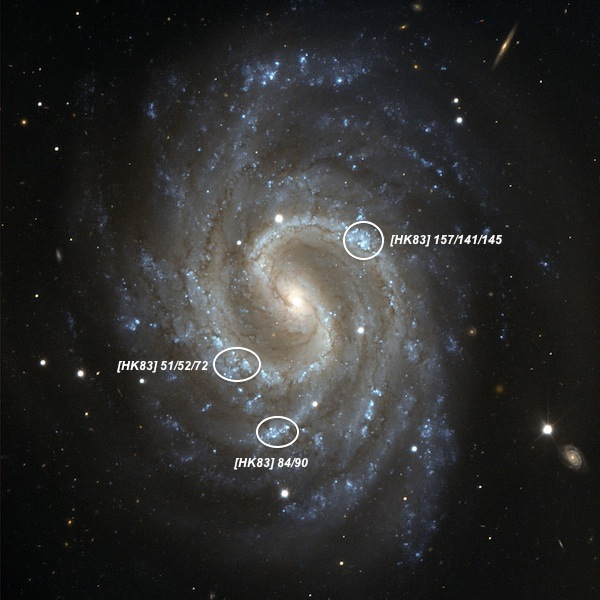
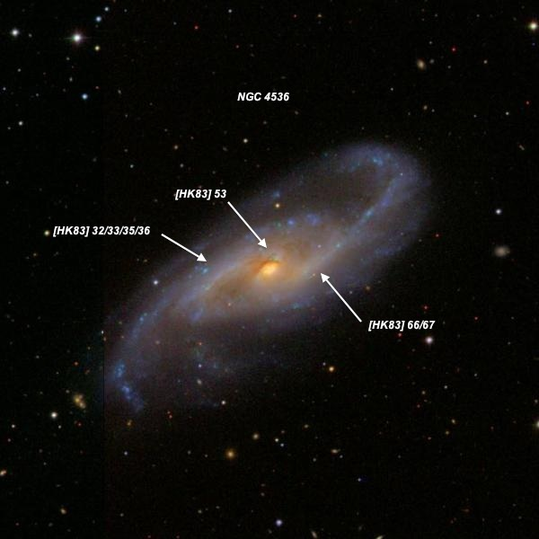

In Heaven with a 48-inch part 3
31) NGC 3656 = Arp 155: bright, moderately large, irregularly round, ~1.3'x1.0', large very bright core but no distinct nucleus. A mag 12.7 star is just off the west edge of a large, diffuse halo. A dust lane or absorption patch is evident on the north side as a region of lower surface brightness. MCG +09-19-64 , a merging companion, is attached at the southern edge of the halo [40" S of center]. It appeared faint, fairly small, low surface brightness, slightly elongated E-W, 20"x15". PGC 2452556 , 2.3' ENE, was a fairly faint, fairly small, roundish glow, 15" diameter, with a brighter core. 32) Shkh 322: this compact quintet is arranged in a 1.3' string oriented E-W. Three of the members were resolved (Shkh 322-3, 322-4 and 322-2), though I missed 322-1 on the east end. This group forms the core of AGC 1248 . At 488, Shkh 322-3 appeared faint to fairly faint, very small, round, 15" diameter (core only). Brightest in a close trio with Shkh 322-4 just 25" WNW and Shkh 322-2 21" NE. Shkh 322-4 appeared faint, very small, round, 10" diameter and Shkh 322-2 appeared very faint, very small, 10" diameter. PGC 96729 , a probable member of AGC 1248, was picked up 3.8' N of Shkh 322, and appeared fairly faint, small, slighlty elongated SW-NE, 18"x14". Two other members of AGC 1248 were also viewed. 33) Arp 151 = VV 144: consists of a very compact elliptical or S0 galaxy with a diffuse, thin jet containing two nearly stellar knots (at the center and the outer tip). This system is located just 1.3' S of mag 8.5 HD 99222 which detracts from viewing, though it was easily observed at 488x. VV 144a , the brightest component, appeared moderately bright, very small, round, 12" diameter, high surface brightness, increases to a bright stellar nucleus. A thin, faint jet extends 40" to the NNW! VV 144b , a very faint [V = 17.7], quasi-stellar knot is at the midpoint of the jet, 20" from VV 144a. A mag 13 star lies 1.1' SSW.

34) Virgo UCD 3 and UCD 7: Virgo UCD 3 is either on the brightest globular clusters in M87 or a nucleated dwarf galaxy, called a Ultra-Compact Dwarf (UCD). It is located 3.0' NE of the center of M87, directly opposite the two small galaxies at the SW edge of the halo of M87. A mag 14.5 star, just 20" SSW, is a perfect reference to focus on the cluster. At 488x it was suspected as an 18th magnitde "star", but I didn't feel confident of the observation. At 813x, though, it was confirmed as an extremely faint, stellar object, glimpsed several times at the same position.
Virgo UCD 7 48" is listed as the brightest of 9 Ultra Compact Dwarfs (UCD) discovered near M87 in the 2006 paper "Discovery of ultracompact dwarf galaxies in the Virgo cluster" (AJ, 131, 312). At 610x it appeared extremely faint (V = 17.7) and small, but definitely non-stellar, perhaps 6" diameter. Often this UCD hovered just at the edge of visibility but sometimes it clearly popped as a distinct, low surface brightness glow and could be confirmed. Situated nearly at the midpoint of two mag 10.8/11.5 stars 6.7' apart at the edge of the field. Located 17' SE of the center of M87. This was the second UCD we observed, earlier having glimpsed Virgo UCD 3, just off the NE edge of M87.
Formation scenarios for UCDs include the remnant nucleus of a stripped dwarf galaxy or a rare surviving relic of a dwarf galaxy formed in the early Universe . Star cluster origins include the merger of several smaller star clusters or an extension of the globular cluster sequence to higher masses. Multiple origins are also possible. It is debatable whether they should be considered massive star clusters or a new class of galaxy in general, though Virgo UCD 7 has an extended envelope of stars and may be a transition object between nucleated dwarfs and (envelope-free) UCDs. 35) NGC 4676 = The Mice: fascinating interacting pair consisting of IC 819 (NNW component) and IC 820 (slightly brighter SSE component), separated by 40" between centers. At 375x and 488x in soft seeing, IC 819 appeared fairly bright, small, elongated 3:2 N-S, 24"x16", high surface brightness. IC 820 was bright, fairly small, elongated 3:2 SW-NE, 30"x20", high surface brightness, increased to a small, very bright nucleus. The two galaxies are connected or surrounded by a low surface brightness bridge. IC 819 has a remarkable bright, long thin tidal tail shooting due north! The tail has a high surface brightness (brightest feature of this type I've observed in any galaxy) and extends roughly 80"x8", dimming at the north end and ending just east of a mag 17.3 star. IC 820 has a small, low surface brightness halo on its south side, but its tail to the south was not visible.. 36) Kronberger's Triangle: this is an odd triangular or wedge-shaped multiple system or ring (see 5/27/12 DeepSkyForum "Object of the Week") with sides 27", 27" and 13". The narrow end is at the SE vertex and contains a very small, round, ~8" knot. A close pair of 6"-8" knots are at the two northern vertices, with the brightest of the three knots (logged as "fairly faint") at the NE end and the faintest at the NW vertex. PGC 53046 (collider?) lies just 0.6' NW and this E-type galaxy appears to be connected by a bridge to Kronberger's Triangle on the SDSS. 37) HCG 77 : UGC 10049 = HCG 77 is a very small quartet, 1.4'x0.6', oriented N-S. At 488x, HCG 77A appeared moderately bright, small, round, 18" diameter, high surface brightness. HCG 77B , just 15" N, was cleanly resolved at 375x and well split at 488x. HCG 77B appeared fairly faint to moderately bright, very small, slightly elongated SW-NE, 15"x10", high surface brightness. HCG 77C /D lies 25" N. HCG 77C appeared fairly faint, fairly small, slightly elongated NW-SE, ~28"x22", even surface brightness except for a faint knot at the south edge ( HCG 77D ). HCG 77D appeared very faint, very small, round, 8" diameter. On the SDSS, this object is resolved into two very compact blue knots, which appear to be HII regions at the south edge of HCG 77C.
UGC 10043 , located 8.5' WNW, appeared fairly faint, fairly large, thin edge-on extending 10:1 NNW-SSE, 1.8'x0.15'. Contains a bright, bulging core with long, very thin extensions (~10"). This galaxy is striking on the DSS and SDSS with an exceedingly thin disc and a very small, abrupt bulge. MCG +04-37-035 , a low surface brightness dwarf, lies 2.7' ESE. 38) NGC 6240 : this disrupted galaxy appeared fairly bright, moderately large, elongated 3:2 SSW-NNE, ~1.2'x0.8', though the shape is irregular. A prominent, thin extension or spike extends 4:1 or 5:1 to the NNE from the central region. This wing is sharply defined and narrow. A short, bright, broader extension juts out to the SSW, in the opposite direction of the NNE wing. Finally, a faint, short wing (~15"x5") extends south from the central region on the east side (on the DSS, this branch curves at the south end). A mag 13.5 star is 30" E, a mag 15.5-16 star is 0.8' SSE and a 12" pair of mag 13.5/15 stars lies 1.5' S.

39) NGC 2276 : at 488x, NGC 2276 appeared fairly bright, fairly large, irregularly round, 2' diameter. Contains a very small, very bright nucleus, surrounded by a patchy halo with weak spiral structure. The most prominent arm winds along the western edge of the galaxy, curving from west to northwest and creating a very asymmetric appearance. Along this arm segment is a prominent, knotty section with two or three clumps, including [HK83] 69, a bright 6" knot. On the southwest side of the halo is [HK83] 63, a faint 6" knot on a line between the nucleus and the 8th-magnitude star ( HD 51141 ) 2.3' SW. In the brighter central region surrounding the nucleus are several brighter, small patches that define the inner arms. A slightly brighter region close southwest of the nucleus includes the multiple designations [HK83] 17/42/46/51. Finally, [H83] 24/27 are weak enhancements on the southeast side of the nucleus. HII region #24 was the site of SN 2005dl

40) NGC 4535 : gorgeous face-on Sc spiral with two, long, very prominent arms extending from a small, very bright central region. The small, very bright core is elongated SSW-NNE and punctuated by an intense, stellar nucleus. The two main arms are clearly attached right at opposite ends of the core. At the NE end, a beautiful thin arm winds clockwise to the west with a mag 13.5 star pinned on the outer north edge. The arm contains NGC 4535:[HK83] 157 (several entries are in Hodge & Kennicutt's "Atlas of HII regions in 125 galaxies"), a small, bright, 15" knot and then dims as it wraps to the south. A mag 14.5 star is situated midway between the nucleus and southern end of this arm [47" SW of the nucleus].
The second main arm is attached at the SW end of the core and curves clockwise to the SE, where the arm brightens in an elongated 30" patch (#51/52/72/78), which is symmetrically positioned opposite #141/145. A fainter arm segment, extending NW to SE is visible on the south side, containing #84/90, a small, fairly faint 12" patch, located 1.5' SSE of center. This knot forms the vertex of a flat isosceles triangle with a mag 15 star 0.5' NW and a mag 14 star 0.7' S. The arms are etched on the slightly fainter and larger background glow of the disc, which extends 5.5'x4.0' N-S.

41) NGC 4536 : very bright, gorgeous showpiece spiral with two very stretched arms extending northwest and southeast ~7'x2.5'. Contains a very bright, slightly elongated core that increases to an intense stellar nucleus. One long arm emanates from the west side of the core and shoots to the northwest, extending over 3' from the nucleus. Close west of the core is a brighter, knotty region identified as [HK 83] 66/67 in the Hodge-Kennicutt "Atlas of H II regions in 125 galaxies". The second arm is connected at the northeast side of the core and stretches to the southeast. A small brightening (#53) is just north of the core where the arm is attached. This arm contains a brighter, elongated section which includes [HK 83] 23/33/35/36, opposite the brighter region on the western arm. 42) NGC 4762 : extremely bright, stunning thin edge-on SW-NE, ~6.0'x0.6'. An extremely thin bright streak extends along the major axis, brightening at the center to a remarkably bright core and stellar nucleus. Beyond the tips of the very high surface portion of the edge-on disc, the galaxy has diffuse extensions at both ends that flare out and appear like water being sprayed out the end of a hose. The extensions increase the length to at least 8'. The bright disc has a sharp edge, particularly on the west side, but a low surface brightness glow is visible on both sides, increasing the width to at least 1' and the overall dimensions to 8'x1'. The southern side of the galaxy is flanked by two mag 9.5 stars and a mag 10.5 star is directly south. NGC 4754 lies 11' NW.